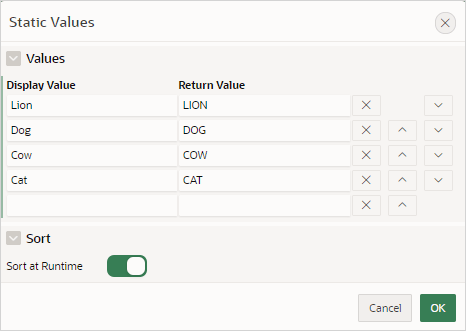
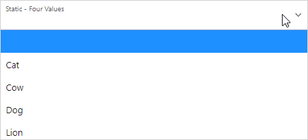
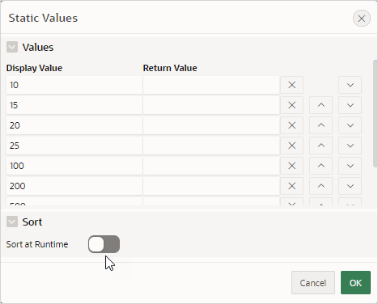
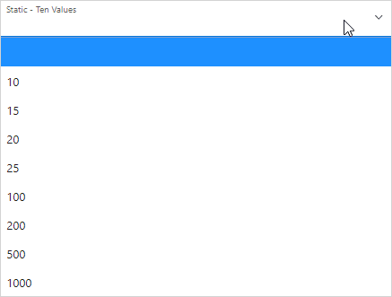
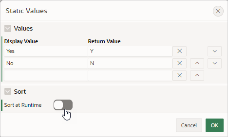
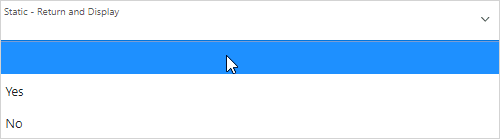

13.1.3.3 Creating a Static List of Values
Create a static list of values locally with the definition of the item.
To create a static list of values locally:
Example 13-1 Four Values Displayed in Alphabetical Order
This example shows the Static Values dialog with four
values defined: Lion, Dog, Cow,
and Cat. The return value of each entry is capitalized.
Sort at Runtime is set to On so that the list
displays alphabetical order.

Description of the illustration static_four_values.png
In a running application this select list would look similar to the following illustration.

Description of the illustration static_4_values_run.png
Example 13-2 Values Displayed in the Order Listed
This example shows the Static Values dialog with ten
values defined: 10, 15, 20,
25, 50, 100,
200, 500, 1000, and
10000 which display in the order listed. The return value of
each entry equals the display value.

Description of the illustration static_10_values.png
In a running application this select list would look similar to the following illustration.

Description of the illustration static_10_values_run.png
Example 13-3 A List of Values with Having Both a Return and Display Value
This example shows the Static Values
dialog with two values defined. The first value has a Display
Value of Yes and a Return
Value of Y. The second value has a
Display Value of No and a
Return Value of N
Sort at Runtime is set to Off to make
sure Yes always displays first.

Description of the illustration static_display_return.png
In a running application this select list would look similar to the following illustration.

Description of the illustration static_display_return_run.png
Parent topic: Creating Page Items